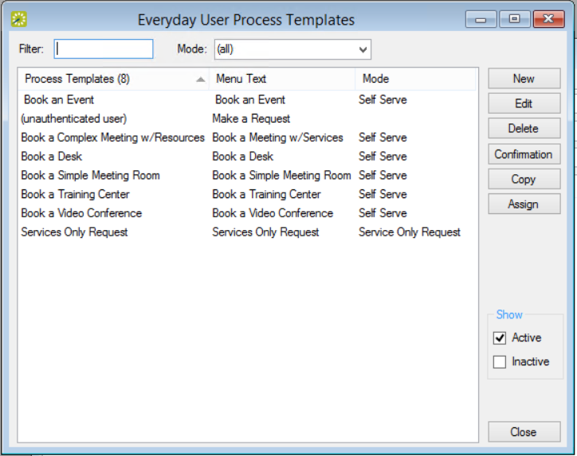
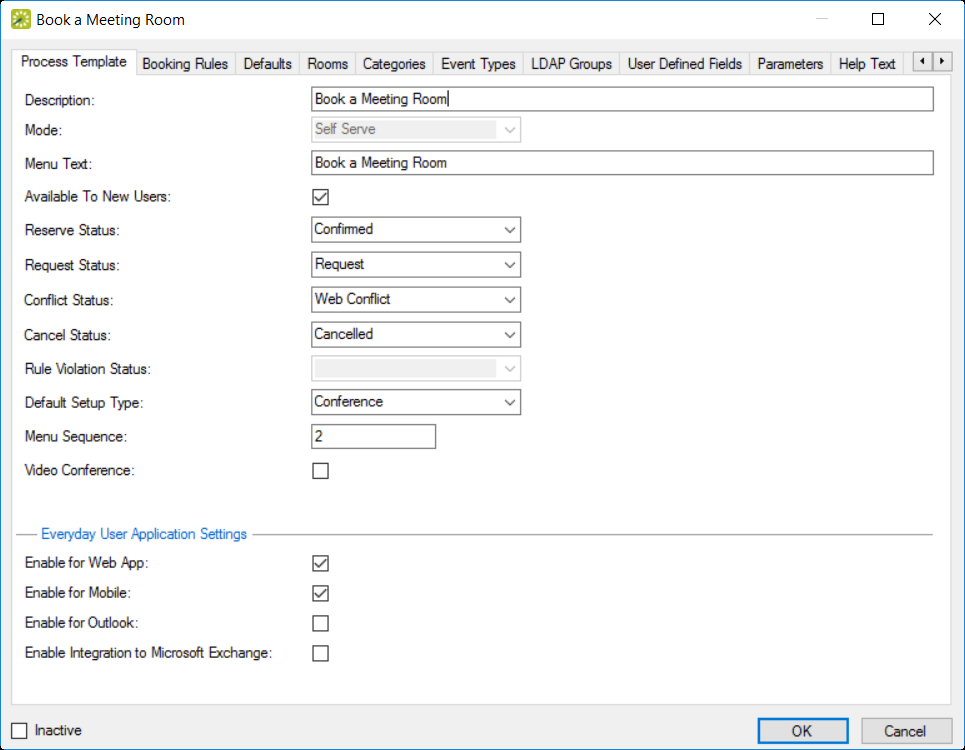

If you have previously used older versions of EMS, you might know booking templates as "Web Process Templates." These templates are now called "Everyday User Process Templates." These templates define user access and booking behavior in EMS Web App, EMS Mobile App, and EMS for Outlook. Similarly, you might know permissions templates, which control what an Everyday User is able to do, as "Web Security Templates." These are now called "Everyday User Security Templates."
See Also: Configure Security Templates.
In EMS Enterprise, the guest (unauthenticated user) everyday user process template is always available and you can have an unlimited number of other everyday user process templates. In EMS Professional, the (unauthenticated user) everyday user process template is always available, but you can have only two additional everyday user process templates.
To configure Everyday User process templates, complete the following steps:
On the EMS menu bar, click Configuration > Everyday Applications > Everyday User Process Templates. The Everyday User Process Templates window opens on the Everyday User Template tab.

Everyday User Process Templates Window
This window lists the process templates that have been defined for your EMS Web App implementation. The pre-defined user called "unauthenticated user" is included in all EMS implementations; you use this template to manage settings for anonymous or “guest” users. For a user to be able to view and use this template, you must assign the user to the template. See Also: Configure Everyday Users.
To view all everyday user process templates in your EMS database, regardless of status, under Show, click Inactive.
Click New. The Book a Meeting Room configuration dialog box displays. Enter the information for the new everyday user process template as needed. See Everyday User Process Template Field Definitions for more information on the tabs in the Book a Meeting Room configuration dialog.

Book a Meeting Room Configuration Dialog
The cache must be cleared in the EMS Web App whenever parameter changes are made in the EMS Desktop Client.
The Request Status field is used to configure booking templates for the "Request/Approval" booking model, in which everyday users request space and administrative users approve those requests (using the Dashboard menu icon). For example, if you set this field to Request, then the booking will not be finalized until an administrator has approved it. If you are configuring a template for booking desks and workspaces or "hoteling," see Create Templates for Desks and Workspaces.
In the Everyday User Application Settings section:
You can continue configuring the booking template on additional tabs or just click OK to save your changes.
When you have completed entries in all tabs as desired, click OK. Your changes to the everyday user templates are saved.
Make sure that you have defined your everyday users so you can assign them to your everyday templates. See Also: Configure Everyday Users